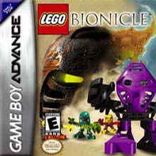

Games were one of the major methods of worldbuilding in BIONICLE. Here are the ones of most importance in order of release.
Mata Nui Online Game
Admittedly, the best and most influential BIONICLE related video game by far, MNOGI was released in 2001 to promote the first wave of BIONICLE toys. It served as the primary source of worldbuilding for a short time as it predated the first comics, movies and novels.
In essence, it was a simple point-and-click adventure game where the player could travel and explore the island of Mata Nui as a Matoran Chronicler called Takua. However, the rich atmosphere and eerie score made it much more, something you have to experience for yourself. Currently the game can be found here.
Mata Nui Online Game II: The Final Chronicle
MNOGII was the sequel to MNOG and, like it's predecessor, took place on the island of Mata Nui. But unlike MNOG, its sequel was filled with glitches and was hardly even playable. Fortunately, this has been fixed by the BioMedia Project group and the game can currently be played from their website.
Other various games
BIONICLE has had it's fair share of miscellaneous games from simple flash games to third person shooters. It should be noted that none of these games apart from MNOG and MNOGII contribute to the storytelling aspect and should be viewed as non-canon. The most notable ones would be BIONICLE: Quest for the Toa, BIONICLE: The Game, Voya Nui Online Game and BIONICLE Heroes in the order of release.
